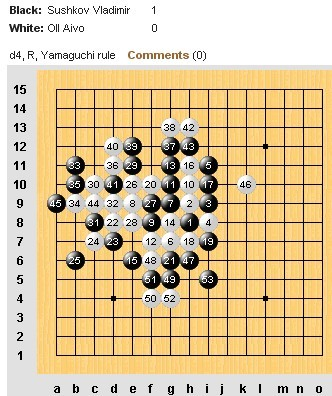

世锦赛第四轮台北林皇羽一花独秀
#1 世锦赛第四轮台北林皇羽一花独秀作者：蓝天蓝 发表时间：2011-8-6 12:00:15
世锦赛第四轮台北林皇羽一花独秀
作者：通讯员
原文网址链接;http://www.rifchina.com/Article/ShowArticle.asp?ArticleID=6461
第十二届五子棋世界锦标赛A组第四轮中华台北林皇羽(Lin Huang-Yu 速胜同岛兄弟侯宜呈 (Hou I-Cheng)，保持连胜。中国选手戴晓涵完胜俄罗斯谢·阿特米耶夫 (Sergey Artemiev)，终于开和。俄罗斯V弗·苏切科夫 (ladimir Sushkov)胜爱沙尼亚爱·欧艾沃 (Aivo Oll)，中国选手曹冬对黄金贤，终盘行棋有误，战至满盘成和。爱沙尼亚特·泰姆拉(Tunnet Taimla )278分钟时战胜瑞典托·安德森(Tord Andersson )。日本冈部宽 (Okabe Hiroshi)与大角友希 (Osumi Yuki)内战315分钟言和。
林皇羽4分，曹冬3.5分分列前两名。第五轮北京时间今天下午三点开始。


#2 Re:世锦赛第四轮台北林皇羽一花独秀作者：明年近日 发表时间：2011-8-6 12:00:42
沙发#3 Re:世锦赛第四轮台北林皇羽一花独秀作者：雨一直下 发表时间：2011-8-6 12:02:21
板凳~~~~~#4 Re:世锦赛第四轮台北林皇羽一花独秀作者：白河愁 发表时间：2011-8-6 12:05:11
地毯#5 Re:世锦赛第四轮台北林皇羽一花独秀作者：小元 发表时间：2011-8-6 12:09:46
木板
#6 Re:世锦赛第四轮台北林皇羽一花独秀作者：无尽 发表时间：2011-8-6 12:12:47
一花
#7 Re:世锦赛第四轮台北林皇羽一花独秀作者：雪儿飘飘 发表时间：2011-8-6 12:13:19
又都被抢去了。到我这什么也没有了#8 Re:世锦赛第四轮台北林皇羽一花独秀作者：忧郁的双眼 发表时间：2011-8-6 14:38:51
画圈圈诅咒小林中#9 Re:世锦赛第四轮台北林皇羽一花独秀作者：雅匪 发表时间：2011-8-6 14:41:25
都不好意思说明来意了#10 Re:世锦赛第四轮台北林皇羽一花独秀作者：忧郁的双眼 发表时间：2011-8-6 14:43:17
大家懂的！！！#11 Re:世锦赛第四轮台北林皇羽一花独秀作者：慕容晓文 发表时间：2011-8-6 14:50:08
LIN的赛程较为有利
对曹冬、坦克和苏切都在最后5轮内，而前几轮他的发挥又很好，总体来说夺冠可能性不大
曹冬如果再赢苏切，就是夺冠第一人选了，苏切只有赢了曹冬才有卫冕的机会……
支持曹冬干掉苏切，而LIN的强势发挥主要看是不是能延续到最后5轮中
#12 Re:世锦赛第四轮台北林皇羽一花独秀作者：裁决殿雪月 发表时间：2011-8-6 15:27:18
天外有天啊 林皇羽V5#13 Re:世锦赛第四轮台北林皇羽一花独秀作者：明年近日 发表时间：2011-8-6 16:33:12
这轮出来形势应该会相对明朗了吧#14 Re:世锦赛第四轮台北林皇羽一花独秀作者：阔哥 发表时间：2011-8-6 17:42:47
很强势呀，就和曹东和啦